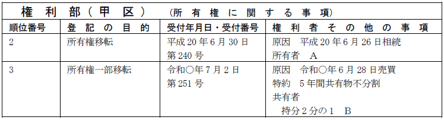

第１編 各 論
第１章 所有権の登記
第２節 所有権移転の登記
Ⅱ 相続の登記
相続人がいるか不明の場合、一方ではこれを探さなければならないが、他方その出現までの間、相続財産を管理し、相続債権者に弁済する等の処理をしなければならない。この場合、相続財産自体を法人として家庭裁判所が選任した清算人（民法952条1項）が、相続財産を管理することになる。
※「相続人のあることが明らかでない」こと
最終順位の相続人が、欠格、廃除、放棄等により相続権を有しなくなった場合等の「相続人のないことが明らかな場合」も、含めるのが通説・実務である。
1. 相続財産法人名義とする登記
相続人のあることが明らかでないときは、相続財産は法人となり、家庭裁判所は、利害関係人又は検察官の請求によって、相続財産の清算人を選任しなければならない（民法951条、民法952条1項）。
この場合、相続財産が不動産である場合には、登記名義を死者名義に放置すべきではないので、「亡Ａ相続財産」を名義人とする、所有権登記名義人の氏名変更登記を申請しなければならない（昭10.1.14民甲39）。
【申請例29 氏名変更 相続人不存在】
事例： 甲土地の共有者の1人であるＡは、令和○年6月28日、死亡した。Ａの相続人は、不明であり、利害関係人の請求により、相続財産清算人としてＣが選任された。
(1) 登記の申請方法
登記名義人の氏名変更登記であるので、登記名義人の単独申請である（64条1項）。具体的には、相続財産清算人が申請する。
(2) 登記の目的
「○番所有権登記名義人氏名変更」と記載する。
(3) 登記原因及びその日付
登記原因は、「相続人不存在」と記載し、日付は被相続人が死亡した日を記載する。
(4) 登記事項
変更後の事項として、「登記名義人 亡Ａ相続財産」と記載する。
※登記記録には上記の登記事項が記録され、相続財産清算人の氏名は記録されない。
(5) 添付情報
①登記原因証明情報（61条、不登令別表23添付情報）
登記名義人の氏名について変更があったことを証する、公務員が職務上作成した情報を提供する。具体的には、相続人の不存在を証する書面としてＡの戸籍謄本等、家庭裁判所の選任審判書を提供する。
もっとも、相続財産清算人の選任を証する家庭裁判所の選任審判書の記載によって、当該相続財産清算人の選任が相続人不存在の場合であること及び死亡者の死亡年月日が明らかである場合には、これらを証する戸籍謄本等の添付は不要である（昭39.2.28民甲422）。
②代理権限証明情報（不登令7条1項2号）
相続財産清算人の権限を証する家庭裁判所の選任審判書を提供する。
2. 相続財産清算人の選任と公告手続
(1) 手続の流れ
(2) 相続財産清算人の権限
(a) 権利義務
相続財産清算人は、財産管理については、不在者の財産管理人と同じ権利義務を負う（民法953条、27条～29条）。
相続財産の保存行為及び管理行為については、家庭裁判所の許可を得ずに行うことができる（民法918条3項、28条、103条）。
(b) 登記申請の可否
ⅰ 建物の表題部に記録されている所有者が死亡した場合において、相続人のあることが明らかでないときには、相続財産の清算人は、直接相続財産法人名義の所有権保存の登記を申請することができる（登研399P.82）。
ⅱ 被相続人が生前に不動産を売り渡し、相続人なくして死亡した場合において、相続財産清算人が、所有権移転の登記の申請をするときは、家庭裁判所の許可を要しない（昭32.8.26民甲1610）。
被相続人が生前にした売買の義務の履行にすぎないので、相続財産清算人の権限に含まれるからである。
(3) 公告手続
(a) 相続財産清算人選任・相続人捜索の公告（民法952条２項）
相続財産の清算人を選任した家庭裁判所は、遅滞なく、その旨及び相続人があるならば一定の期間内（６か月以上）にその権利を主張すべき旨を公告しなければならない（民法952条２項）。
(b) 請求申出の公告（民法957条１項）
（a）の公告後、相続財産の清算人は、全ての相続債権者及び受遺者に対し、２か月以上の期間を定めて、その期間内にその請求の申出をすべき旨を公告しなければならない（民法957条１項前段）。請求申出の公告は、相続財産や相続債権者の調査期間を設けるため、（a）の公告後に実施するものとされた。
請求申出の公告は、（a）の規定により定めた相続人が権利を主張すべき期間内に満了しなければならない（民法957条１項後段）。
3. 失権
952条２項の期間内に相続人としての権利を主張する者がないときは、相続人並びに相続財産の清算人に知れなかった相続債権者及び受遺者は、その権利を行使することができない（民法958条）。
相続債権者及び受遺者が失権すると、相続財産は特別縁故者への財産分与（民法958条の２）の対象となる。
1. 特別縁故者への財産分与（民法958条の2）
相続人不存在の場合において、相当と認めるときは、家庭裁判所は、被相続人と生計を同じくしていた者、被相続人の療養看護に努めた者その他被相続人と特別の縁故があった者（特別縁故者）の請求によって、これらの者に、清算後残存すべき相続財産の全部又は一部を与えることができる（民法958条の2第1項）。この相続財産の分与は、特別縁故者からの家庭裁判所への申立てにより審判でなされる。
この審判がされると、特別縁故者が取得することになった不動産について、特別縁故者名義にする所有権移転の登記を申請することができる。
なお、家庭裁判所への申立ては、民法952条2項の公告期間の満了後3か月以内にしなければならない（民法958条の2第2項）。
【申請例30 所有権移転 民法第958条の2の審判】
事例： 土地所有者Ａが死亡し、相続人の存在が不明であるため、相続財産清算人にＢが選任され、所有権登記名義人の変更登記がなされた後、Ｃからなされた申立てに対し、令和○年6月28日当該土地をＣに分与する旨の民法第958条の2の審判が確定した。翌日、Ｃが単独で当該土地の所有権移転登記を申請した。土地の課税標準の額は、金1000万円である。
2. 登記申請の手続
(1) 登記申請の方法
特別縁故者を所有権登記名義人とする登記は、所有権移転登記によるが、判決に準じ、特別縁故者の単独申請によることができる。
また、特別縁故者と相続財産清算人の共同申請によることも問題ない。
(2) 登記原因及びその日付
登記原因は「民法第958条の2の審判」と記載し、日付は審判が確定した日を記載する（昭37.6.15民甲1606、民法958条の2）。
当該登記原因の日付は、相続財産法人の成立日（亡Ａの死亡日）から少なくとも9か月以上経過した後の日付でなければならない。特別縁故者に対する相続財産の分与の申立てについての審判は、相続財産清算人選任・相続人捜索の公告（民法952条2項）の期間の満了後3か月を経過した後にしなければならないとされているためである（家事事件手続法204条1項）。
(3) 申請人の表示
特別縁故者の単独申請であっても、権利者として特別縁故者を表示するだけでなく、義務者として「亡Ａ相続財産」と表示する。
(4) 添付情報
・登記原因証明情報（61条、不登令7条1項5号ロ(1)）
相続財産分与の審判書正本及びその確定証明書の提供を要する。
共有者の1人が、その持分を放棄したとき、又は死亡して相続人がないときは、その持分は、他の共有者に帰属する（民法255条）。
共有者の1人が死亡し、相続人の不存在が確定し、相続債権者や受遺者に対する清算手続が終了したときは、その共有持分は、民法958条の2の規定に基づく特別縁故者に対する財産分与の対象となり、当該財産分与がされず、当該共有持分が承継すべき者がないまま相続財産として残存することが確定したときにはじめて、民法255条により他の共有者に帰属することになると解すべきである（最判平元.11.24）。
そして、他の共有者がいない場合等、所有者のない不動産は、国庫に帰属する（民法239条2項）。
【申請例31 持分移転 特別縁故者不存在】
事例： ＡＢが土地を共有していた（各持分2分の1）が、Ａが死亡し、相続人の存在が不明であるため、相続財産清算人にＣが選任され、所有権登記名義人の変更登記がなされた。その後、特別縁故者からの請求がなく、令和○年6月28日に特別縁故者不存在が確定した。土地の課税標準の額は、金2000万円である。
1. 共有者に帰属した場合の登記申請の手続
(1) 登記の目的
「亡Ａ相続財産持分全部移転」等と記載する。相続人不存在を原因とする氏名変更登記をしているため、登記名義人は「亡Ａ相続財産」である。
(2) 登記原因及びその日付
登記原因は「特別縁故者不存在確定」と記載する。日付は、法定の期間内に特別縁故者の分与の申立てがなかったときは、この申立期間の満了日の翌日となり、期間内に申立てはあったが、その申立てが却下され、その却下決定が確定したときは、その却下の審判が確定した日の翌日となる（平3.4.12民3.2398）。
(3) 申請人
権利者は他の共有者であり、義務者は「亡Ａ相続財産」と表示する。
他の共有者と相続財産清算人の共同申請である。
(4) 添付情報
①印鑑証明書（不登令16条2項、18条2項）
相続財産清算人の印鑑証明書を提供する（書面申請の場合）。
②代理権限証明情報（不登令7条1項2号）
相続財産清算人の選任審判書を提供する。
2. 他の共有者の持分放棄
共有者の一方が相続人なくして死亡し、当該持分について相続財産法人名義とする所有権の登記名義人の氏名変更の登記がされている場合において、他の共有者が持分放棄したときの当該他の共有者の持分の相続財産法人への帰属の登記の申請人は、相続財産法人を登記権利者（相続財産清算人が申請する）、持分放棄者を登記義務者とする共同申請である（昭31.6.25民甲1444）。
Ⅲ 所有権に関するその他の登記
1．申請手続の方法
各共有者は、5年を超えない期間内は分割をしない旨の契約（共有物分割禁止の定め）をすることができる（民法256条1項ただし書）。
所有権一部移転登記と共有物分割禁止の契約当事者は同一であるため、共有物分割禁止の定めを当該所有権一部移転登記の登記事項の一部とすることができる。
これに対して、共有者全員持分全部移転の登記と共有物分割禁止の定めは契約当事者が異なるため、一の申請ですることはできず、別途所有権変更登記を申請しなければならない（昭49.12.27民3.6686）。相続によって不動産を共有することとなった共同相続人においても同様である（昭49.12.27民3.6686）。
また、既に共有名義の登記がされている場合にも、所有権変更登記によることになる。
【申請例32 所有権変更 共有物分割禁止の定め】
事例： 甲区2番でＡＢが共有している土地（各持分2分の1）について、令和○年6月28日、ＡＢ間で、同日から5年間共有物を分割しない旨の特約がなされた。

2. 申請情報の内容
(1) 所有権変更登記による場合
(a) 登記の目的
「○番所有権変更（付記）」と記載する。
(b) 登記原因及びその日付
登記原因は「特約」と記載し、日付は共有物分割禁止の定めがされた日を記載する。
(c) 登記事項
「特約 ○年間共有物不分割」と記載する。
(d) 申請人
共有者全員が登記権利者兼登記義務者として申請する合同申請である。
(e) 添付情報
①登記原因証明情報（61条、不登令別表25添付情報イ）
②登記識別情報（22条本文）
申請人全員の登記識別情報
③印鑑証明書（不登令16条2項、18条2項）
申請人全員の印鑑証明書
④承諾証明情報（不登令別表25添付情報ロ）
当該登記を付記登記によってする場合において、登記上の利害関係を有する第三者があるときは、当該第三者の承諾を証する当該第三者が作成した情報又は当該第三者に対抗することができる裁判があったことを証する情報を提供しなければならない。
(2) 所有権移転登記の登記事項の一部として申請する場合
【申請例33 所有権一部移転 売買（共有物分割禁止の定めと共にする場合）】
事例： Ａが、自分の土地の一部（持分2分の1）を、令和○年6月28日、Ｂに売却した。その際、同日から5年間共有物を分割しない旨の特約がなされた。